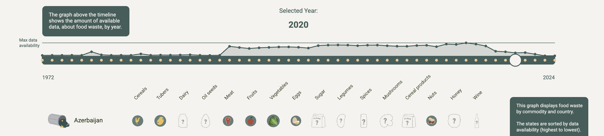
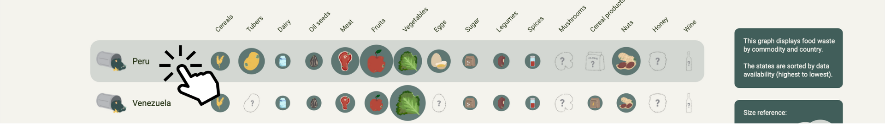
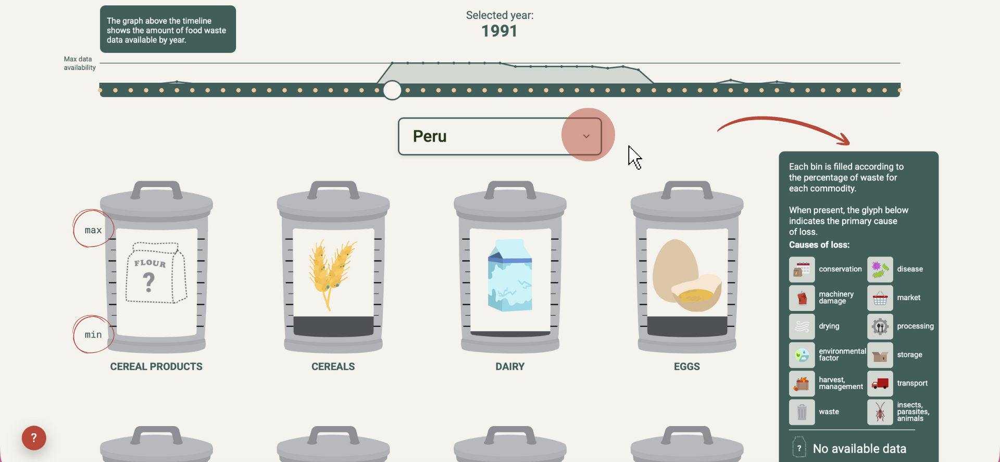
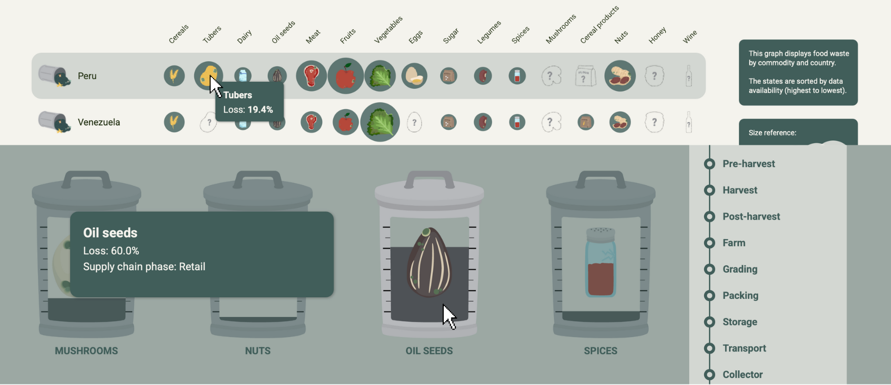

Navigate Time
Use the Timeline at the top to change years.
(drag left/right, click, or use the keyboard arrow keys.) Look at the Matrix to see the connection between Country and Product.
(Note: percentages are not comparable.)

Dig Deeper
Want more details? Click on any row (Country) to open a dedicated analysis page.

Analyze the Causes
Inside the country view, discover the main causes and supply chain stages where food is lost.(e.g., during harvest or transport).

Explore details
Don't just look, interact! Hover your mouse over charts and bars to reveal precise numbers and "hidden" info.

Ready to explore?
Dive into the data and discover the whole story.